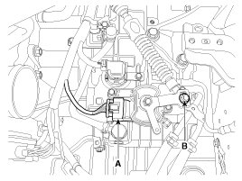
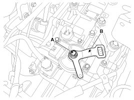
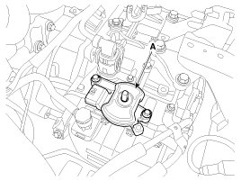

Transmission Position Sensor/Switch: Service and Repair
Removal
1. Make sure vehicle does not roll before setting room side shift lever and T/M side manual control lever to "N" position.
2. Remove the battery and the battery tray.
3. Remove the air cleaner assembly.
4. Remove the shift cable mounting nut (B).
TTightening torque:
7.8 - 11.8 N.m (0.8 - 1.2 Kgf.m, 5.7 - 8.6 lb-ft)
5. Disconnect the inhibitor switch connector (A).

6. Remove the manual control lever (B) and the washer after removing a nut (A).

CAUTION:
When installing, affix the manual control lever and the inhibitor switch with Ø5mm (0.1969in.). Then tighten the inhibitor assembly mounting bolts.
7. Remove the inhibitor assembly (A) after removing the bolts (2ea).
Tightening torque:
9.8 - 11.8 N.m (1.0 - 1.2 kgf.m, 7.2 - 8.7 lb-ft)

CAUTION:
When installing, tighten the inhibitor assembly mounting bolt lightly, so that necessary adjustments can be made. Tighten to specifications.
Installation
1. Installation is the reverse of removal.